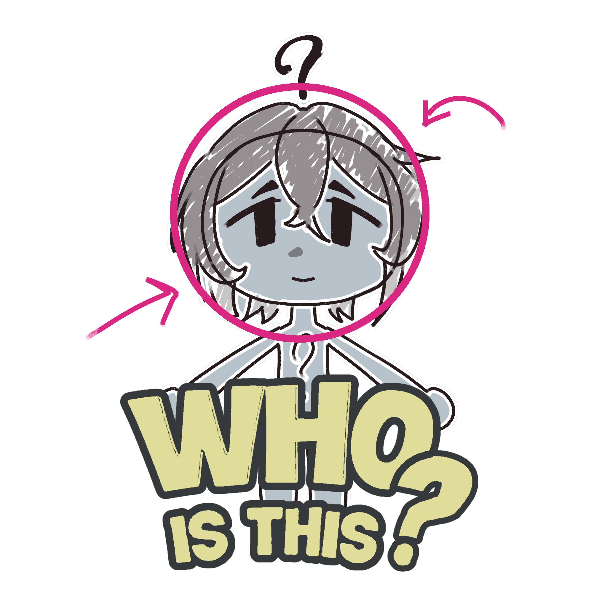

In this game you'll be presented with a doodle of a Vocal Synths and you have to guess who it is based on their silhouette!
A vocal syntethizer is a computer system or eletronic instrument that artificially produces the human voice. In this game we're going to have mascots of some voicebank from varius singing synthetizer software.
